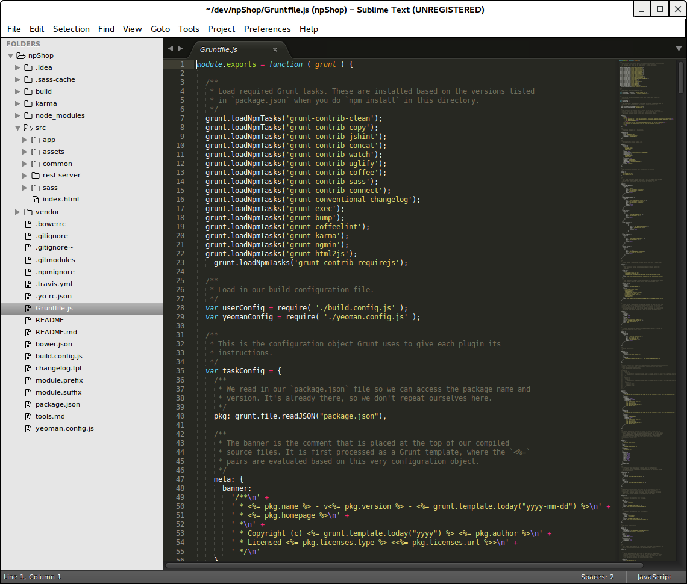
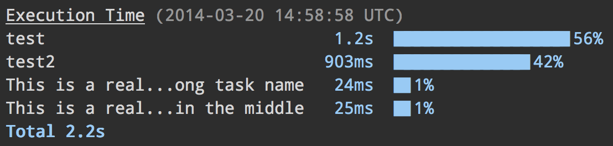

Statische Code-Analyse von Javascript-Code
Grunt CLI global installieren
$ npm install -g grunt-cli
Zwei Dateien werden benötigt
- Gruntfile.js
- package.json
Initial package.json anlegen
{
"name": "example linting",
"version": "0.1.0",
"author": "Sebastian Weber"
}
Dependencies installieren
- Den eigentlichen Task Runner (npm Modul) als development dependency hinzufügen
- D.h. grunt in package.json aufnehmen
- Hinzufügen von Grunt Plugin JShint
- Muss nicht händisch erfolgen
$ npm install grunt --save-dev
$ npm install grunt-contrib-jshint --save-dev
package.json mit Dependencies
{
"name": "example linting",
"version": "0.1.0",
"author": "Sebastian Weber",
"devDependencies": {
"grunt": "~0.4.1",
"grunt-contrib-jshint": "~0.6.0"
}
}
Gruntfile (Gruntfile.js)
module.exports = function(grunt) {
// Load the plugin that provides the "jshint" task.
grunt.loadNpmTasks('grunt-contrib-jshint');
// Project configuration.
grunt.initConfig({
jshint: {
options: {
curly: true,
eqeqeq: true
},
target1: ['Gruntfile.js', 'src/**/*.js']
}
});
// Define the default task
grunt.registerTask('default', ['jshint']);
};
Bibliotheken werden nicht ausgeliefert
sweber@gorad:~/dev/gswg-examples/1/04-linting$ ls
Gruntfile.js package.json src
sweber@gorad:~/dev/gswg-examples/1/04-linting$ grunt
>> Local Npm module "grunt-contrib-jshint" not found. Is it installed?
Warning: Task "jshint" not found. Use --force to continue.
Aborted due to warnings.
Bibliotheken installieren
$ npm install
sweber@gorad:~/dev/gswg-examples/1/04-linting$ npm install
npm WARN package.json gswg-1-04-linting@0.1.0 No description
npm WARN package.json gswg-1-04-linting@0.1.0 No README data
grunt@0.4.5 node_modules/grunt
├── which@1.0.8
├── dateformat@1.0.2-1.2.3
├── eventemitter2@0.4.14
├── getobject@0.1.0
├── rimraf@2.2.8
├── colors@0.6.2
├── async@0.1.22
├── hooker@0.2.3
├── grunt-legacy-util@0.2.0
├── exit@0.1.2
├── lodash@0.9.2
├── coffee-script@1.3.3
├── underscore.string@2.2.1
├── iconv-lite@0.2.11
├── nopt@1.0.10 (abbrev@1.0.5)
├── grunt-legacy-log@0.1.1 (underscore.string@2.3.3, lodash@2.4.1)
├── minimatch@0.2.14 (sigmund@1.0.0, lru-cache@2.5.0)
├── glob@3.1.21 (inherits@1.0.0, graceful-fs@1.2.3)
├── findup-sync@0.1.3 (lodash@2.4.1, glob@3.2.11)
└── js-yaml@2.0.5 (argparse@0.1.16, esprima@1.0.4)
grunt-contrib-jshint@0.6.5 node_modules/grunt-contrib-jshint
└── jshint@2.1.11 (console-browserify@0.1.6, underscore@1.4.4, shelljs@0.1.4, minimatch@0.4.0, cli@0.4.5)
Struktur nach Initialisierung
sweber@gorad:~/dev/gswg-examples/1/04-linting$ ls
Gruntfile.js node_modules package.json src
sweber@gorad:~/dev/gswg-examples/1/04-linting$ ls node_modules/
grunt grunt-contrib-jshint
Grunt Task in Action
sweber@gorad:~/dev/gswg-examples/1/04-linting$ grunt
Running "jshint:target1" (jshint) task
Linting src/foo.js ...ERROR
[L1:C6] W116: Expected '===' and instead saw '=='.
if(7 == "7") alert(42);
Linting src/foo.js ...ERROR
[L1:C14] W116: Expected '{' and instead saw 'alert'.
if(7 == "7") alert(42);
Warning: Task "jshint:target1" failed. Use --force to continue.
Aborted due to warnings.
Wie funktioniert das Gruntfile?
Reminder Gruntfile
module.exports = function(grunt) {
// Load the plugin that provides the "jshint" task.
grunt.loadNpmTasks('grunt-contrib-jshint');
// Project configuration.
grunt.initConfig({
jshint: {
options: {
curly: true,
eqeqeq: true
},
target1: ['Gruntfile.js', 'src/**/*.js']
}
});
// Define the default task
grunt.registerTask('default', ['jshint']);
};
Grunt Wrapper
module.exports = function(grunt) {
// Grunt-related things go here
}
- Umhüllt eigentliche Grunt-Konfiguration
- Wird als wrapper function bezeichnet
- Muss jedes Gruntfile und Gruntplugin haben
- Funktion nimmt grunt Objekt als Argument auf
- Grunt ruft wrapper Funktion mit grunt Objekt als einziges Argument auf
Grunt Objekt
- grunt Objekt stellt Grunt-API dar
- Wird verwendet zur Interaktion mit Grunt
- Stellt properties und methods bereit
- Konfigurationen laden und aktualisieren via grunt.config
- Tasks registrieren und laden via grunt.task
- ...
Funktion grunt.initConfig
- grunt.initConfig nimmt Objekt entgegen als Ausgangsbasis für weitere Konfiguration
- Alias für grunt.config.init
- Beispielkonfiguration für JShint
grunt.initConfig({
jshint: {
target1: ['Gruntfile.js']
}
});
Funktion grunt.loadNpmTasks
- Plugins und Tasks laden durch grunt.loadNpmTasks
- Beispiel: Laden von Plugin grunt-contrib-jshint
grunt.loadNpmTasks('grunt-contrib-jshint');
Funktion grunt.registerTask
- Registrieren von Tasks via grunt.registerTask
- Alias für grunt.task.registerTask
- Beispiel
- Default Task definiert
- Task jshint definiert
- jshint Task dem Default Task zugewiesen
- Aufruf von grunt ohne Argument (default) und mit Argument jshint
grunt.registerTask('default', ['jshint']);
Alles in Gruntfile.js zu packen ist problematisch

Existieren Techniken für DRY und Modularisierung
Variablen verwenden
module.exports = function (grunt) {
var globalConfig = {
src: 'src',
dest: 'dev'
};
grunt.initConfig({
globalConfig: globalConfig,
compass: {
options: {
sassDir: '<%= globalConfig.src %>/styles',
cssDir: '<%= globalConfig.dest %>'
},
dev: {}
}
// ...
Task Aliase definieren
grunt.registerTask('js', ['jshint', 'concat', 'uglify']);
grunt.registerTask('css', ['sass:dev']);
grunt.registerTask('html', ['slim', 'htmlmin']);
grunt.registerTask('default', ['js', 'css', 'html', 'copy', 'watch']);
Doppelte Plugin Definition
package.json
{
"devDependencies": {
"grunt": "~0.4.1",
"grunt-contrib-jshint": "~0.6.0"
}
}
Gruntfile.js
module.exports = function(grunt) {
// Load the plugin that provides the "jshint" task.
grunt.loadNpmTasks('grunt-contrib-jshint');
Kann man sich die Deklarationen in Gruntfile sparen?
Yep, möglich durch Plugin
Setup load-grunt-tasks
Vorher
module.exports = function (grunt) {
grunt.loadNpmTasks('grunt-shell');
grunt.loadNpmTasks('grunt-sass');
grunt.loadNpmTasks('grunt-recess');
grunt.loadNpmTasks('grunt-sizediff');
grunt.loadNpmTasks('grunt-svgmin');
grunt.loadNpmTasks('grunt-styl');
grunt.loadNpmTasks('grunt-php');
grunt.loadNpmTasks('grunt-eslint');
grunt.loadNpmTasks('grunt-concurrent');
grunt.loadNpmTasks('grunt-bower-requirejs');
Nachher
module.exports = function (grunt) {
require('load-grunt-tasks')(grunt);
Gruntfile mit vielen Task-Konfigurationen schnell unübersichtlich
Kann man Konfigurationen auslagern?
Yep, möglich durch Plugin
load-grunt-configs in Action
// Gruntfile.js
module.exports = function(grunt) {
require('load-grunt-tasks')(grunt);
var options = {
project: {
// project src/target folders
app: 'app',
assets: '<%= project.app %>/assets',
src: '<%= project.assets %>/src',
// ...
}
// ...
};
/* Loads the various task registration / configuration files
located at config folder.*/
var configs = require('load-grunt-configs')(grunt, options);
grunt.initConfig(configs);
grunt.registerTask('js', ['jshint', 'concat', 'uglify']);
// ...
}
Ausgelagerte Konfiguration für JShint
// config/jshint.json
{
"options": {
"curly": true,
// ...
},
"gruntfile" : {
"src" : "Gruntfile.js"
},
"app_js" : {
"src" : ["<%= project.js %>"]
}
}
Ausgelagerte Konfiguration für CSS Minify
// config/cssmin.js
module.exports.tasks = {
"cssmin": {
"add_banner": {
"options": {
"banner": "/* My minified css file */"
},
"files": {
"<%= project.css_dist %>/style.css":
["<%= project.css_gen %>/**/*.css"]
}
}
}
}
Statische Analyse und Linting
Dateien von A nach B verschieben
// config/copy.js
module.exports.tasks = {
copy: {
html_gen: {
files: [
{
expand: true,
flatten: true,
filter: "isFile",
cwd: "<%= project.src %>",
src: ['**/*.html'],
dest: '<%= project.gen %>/'}
]
}
}
}
Dinge konkatinieren
// config/concat.js
module.exports.tasks = {
"concat": {
"options": {
"separator": ';',
},
"dist": {
"src": [
'src/intro.js',
'src/project.js',
'src/outro.js'
],
"dest": 'dist/built.js',
},
}
}
Minify Javascript
// config/uglify.js
module.exports.tasks = {
"uglify": {
"options": {
"banner": "<%= banner %>"
},
"dist": {
"src": "<%= project.js_glob %>",
"dest": "<%= project.js_dist %>/<%= pkg.name %>.min.js"
}
}
}
Transkompilierung (Sass)
// config/sass.js
module.exports.tasks = {
sass: {
dev: {
options: {
style: 'expanded',
banner: '<%= tag.banner %>',
compass: true
},
files: {
'<%= project.css_gen %>/style.css':
'<%= project.scss_file %>'
}
}
}
}
Shell Aufrufe
// config/patternlab.js
module.exports = {
patternlab: {
options: {
stdout: true
},
command: 'php core/builder.php -g'
}
};
File Watching
// config/watch.js
module.exports.tasks = {
watch: {
gruntfile: {
files: '<%= jshint.gruntfile.src %>',
tasks: ['jshint:gruntfile']
},
app_js: {
files: '<%= project.js %>',
tasks: ['jshint:app_js']
},
app_sass: {
files: ['<%= project.src %>/{,*/}*.{scss,sass}'],
tasks: ['sass']
}
}
}
Testing mit Karma und Jasmine
Ausführungsdauer anzeigen

Stylischere Ausgaben möglich

Ungenutze CSS Styles eliminieren
“A grunt task for removing unused CSS from your projects with UnCSS. Works across multiple files and supports dynamically injected CSS via PhantomJS.”
“Taking a multi-page project using Bootstrap with >120KB of CSS down to 11KB..”
Grunt Plugins
- 4.084 Grunt Plugins and counting
- Grunt Plugin Search Interface
- Wann ist man ein Grunt Plugin?
- Keyword gruntplugin angegeben
- Publiziert als npm